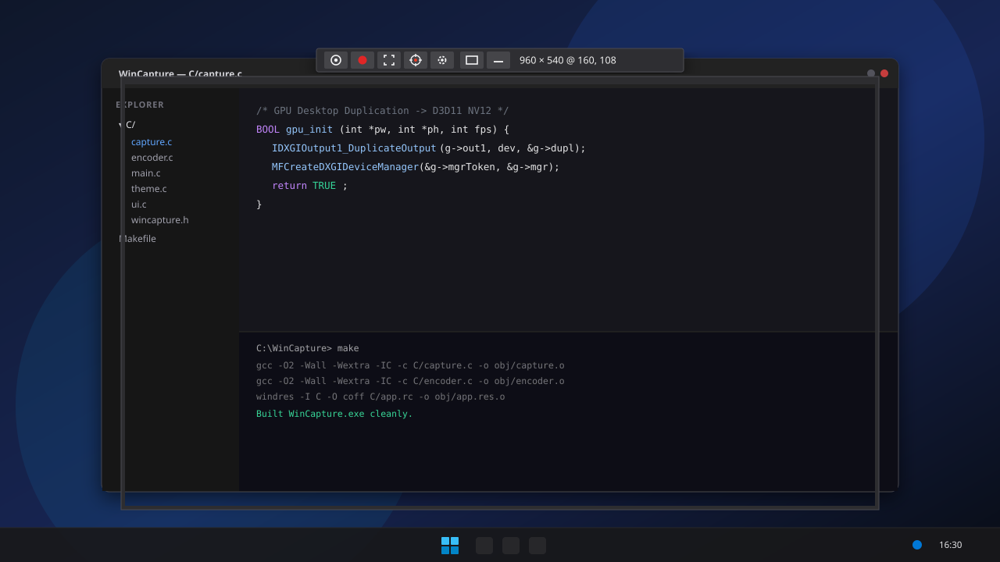
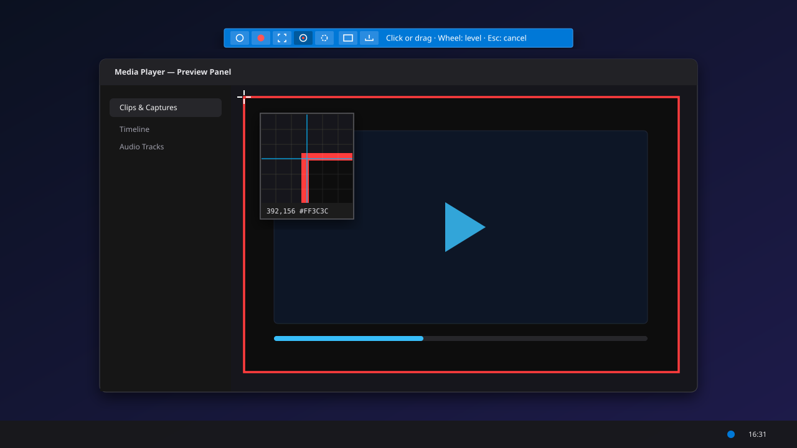
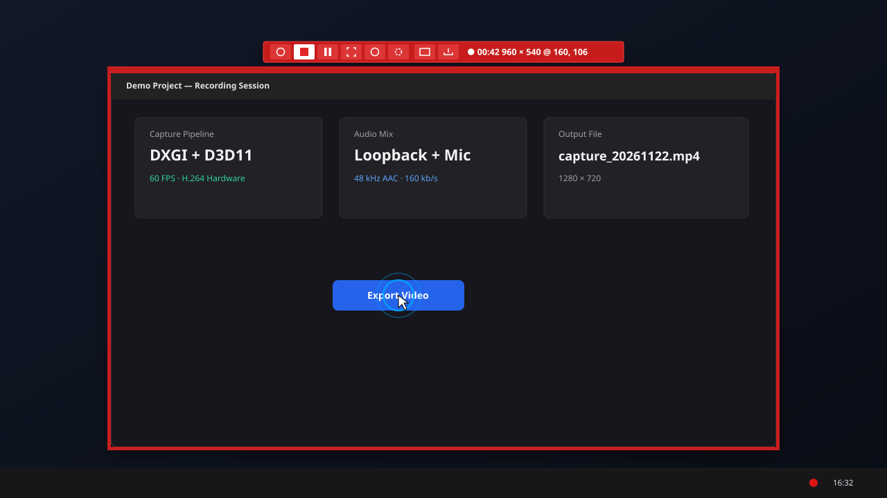
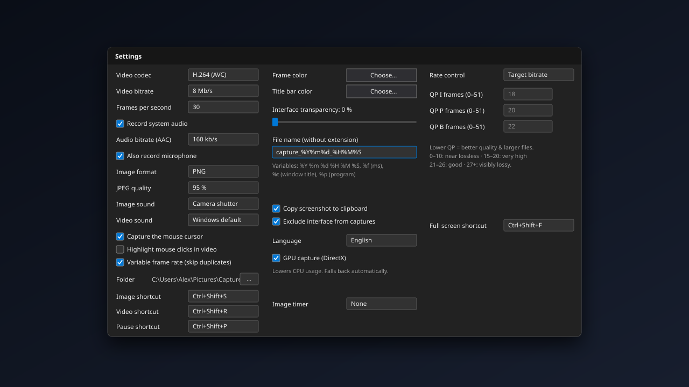

A lightweight, dependency-free capture tool written entirely in C. DXGI/D3D11 hardware acceleration, H.264/HEVC encoding, WASAPI audio mixing — no installer, no bloat.
Every pixel of UI is rendered by Win32 GDI — no frameworks, no Electron, no Chromium embedded.

Collapses when idle, expands on hover. Live W×H@X,Y readout, size presets, tray minimize.

UI Automation highlights windows and inner panels. Real-time 4× loupe with RGB readout.

Frame turns crimson during recording, amber when paused. Click-ripple halos rendered into video.

Automatically follows AppsUseLightTheme in real time, including DWM title bars.
Built on Windows platform APIs — hardware-accelerated, zero-latency, zero runtime dependencies.
GPU-accelerated pipeline via DXGI Desktop Duplication → D3D11 VideoProcessor → Media Foundation. BGRA→NV12 on the GPU, minimal CPU overhead.
System loopback + optional microphone, resampled and mixed in real time to AAC at 44.1 / 48 kHz. Start/stop cues muted automatically.
Scroll the wheel to step through UI hierarchy levels. Snap to any window, panel, or free-form rectangle. 4× pixel magnifier with crosshair & RGB readout.
Windows Imaging Component capture. Optional countdown timer (3s / 5s / 10s), auto clipboard copy, quick-tray shortcuts.
PerMonitorV2 DPI awareness with WM_DPICHANGED. Crisp rendering across mixed-DPI multi-monitor setups.
Reads AppsUseLightTheme and updates DWM attributes in real time — including title bars and all custom-drawn controls.
English, Français, Español, Deutsch — auto-detected on first launch, stored in capture.ini alongside all settings.
Links only against standard Windows system libraries. No runtime, no installer, no third-party DLLs. Just WinCapture.exe.
Pause and resume seamlessly without splitting files. Bar turns amber on pause, crimson on record.
Every component maps directly to a Windows platform API — no abstractions, no overhead.
| Capability | API / Technology | Details |
|---|---|---|
| Screen capture | DXGI Desktop Duplication | Hardware-accelerated, monitors all displays |
| Video encoding | Media Foundation IMFSinkWriter | H.264 AVC & H.265 HEVC → .mp4 |
| Color conversion | D3D11 VideoProcessor | BGRA → NV12 on GPU, falls back to GDI |
| Rate control | ICodecAPI | Target bitrate (2–32 Mb/s) or QP (0–51) per frame type |
| System audio | WASAPI Loopback | Shared-mode capture, real-time mix |
| Microphone | WASAPI Render | Mixed & resampled to 44.1 / 48 kHz AAC |
| Screenshots | WIC IWICImagingFactory | PNG, JPEG (60–100%), BMP + clipboard CF_DIB |
| Window targeting | IUIAutomation | Tree walk, hover highlight, 4× magnifier |
| DPI awareness | PerMonitorV2 | app.manifest + WM_DPICHANGED handler |
| Theme detection | DwmSetWindowAttribute | Reads AppsUseLightTheme, updates DWM in real time |
| Overlay exclusion | SetWindowDisplayAffinity | WDA_EXCLUDEFROMCAPTURE — UI never appears in captures |
| Fallback capture | GDI BitBlt | Used when DXGI is unavailable |
All hotkeys are customizable in the Settings dialog.
Only MinGW-w64 and GNU make required. No third-party libraries, no package managers.
# Clone the repository git clone https://github.com/UnCrevard/WinCapture.git cd WinCapture # Build WinCapture.exe make # Or build and launch directly make run # Available targets make all # Build WinCapture.exe make run # Build + launch make clean # Remove obj/ make fclean # Remove obj/ + WinCapture.exe make re # Clean rebuild